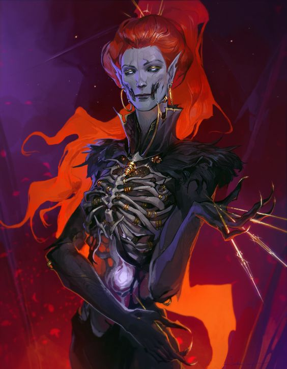

Devils
(Based on Tiefling 5e race and homebrew "Bound Demon"on DNDBeyond.)
Devils – the sort of creatures most people speak of in whispers. In the multiverse of Eos, devils are the reigning species on Domain - Ennui. Direct servants of Despair himself, they are masters of exploitation and bargains. They hunger for and are eager to spread the angst and melancholy of the world. That being said, this does not make them innately evil. Devils can still chart their own course in life and may find that their gifts are used for more than their original purpose.
History¶
The history of devils in Eos is a complex one. Despair, the contrasting twin to Dream, always saw himself as stuck in his brother’s shadow. As Dream spread creations of creativity and imagination, Despair’s envy manifested itself into the first demons of the world – beings who sought to exploit the same feeling of envy and anger that he had felt. As the story goes, Dream had sent a particular nightmare to his brother in jest. Such vicious images was Despair plagued with that his own powermanipulated the creature into the first demon. With a mix of the aeon’s tears and anger, the demon raged and created the Landmark - Hellocke (wip), the lake of hellfire that now exists in Ennui, after the divergence. It is within these depths that the souls whose lives focused on their despair and strife may be reborn as demons. A devil’s natural appearance is said to be a reflection of the perceived strife of their former lives. A soul who committed grievous crimes against his kind or others might appear to be more monstrous or grotesque than someone who spent a life lying to everyone they loved. Common features include an array of skintones, tails, horns, enlarged canines, talons, etc.
Secretive and Tricky¶
Over the course of time, demons have evolved beyond their original anger and fire. Rather than be betrayed by their emotions, demons became the masters of them. They honed those into magics that would allow them to further manipulate the emotions of others. Through expert wordsmithing and fine attention to detail, it is said a demon can manipulate almost any deal or situation in their favor. In the same development, they earned a weakness. Their fiendish names, known only to them through blood memory in the Hellocke, became a source of vulnerability. They guard these names most carefully as it is a said if you know a demon’s true name, you can command them to your will. (This is a lie but it is a sign of great respect or intimacy to know a demon’s true name.)
In the Mundane¶
While in the Mundane, devils appear to be as humanoid as the rest of humanity. If they possess wings, they are not visible nor capable of flight. A devil’s purpose in the Mundane is usually one of scouting, finding potential souls who might live lives of promising devilish futures, and to cultivate that through manipulation. Creature Type: Humanoid Size: Medium Speed: Your base walking speed is 30 feet. Winged variants have a flying speed equal to their walking speed. Ability Score Increase: When determining your character’s ability scores, increase one score by 2 and increase a different score by 1, or increase three different scores by 1. Follow this rule regardless of the method you use to determine the scores, such as rolling or point buy. Suggestions would be Charisma and Intelligence. You can follow those suggestions or ignore them, but you can’t raise any of your scores above 20. Languages: You know Common and one other language of your choice. Darkvision: You can see in dim light within 60 feet of you as if it were bright light, and in darkness as if it were dim light. You can’t discern color in darkness, only shades of gray.
Silver-tongued: The devil's abilities are heavily focused on their ability to swindle mortals out of their very souls. As a demon, you have proficiency in; Insight, Deception, and Persuasion. and have an immunity to being charmed.
The Art of the Trade: Once per long rest, you may attempt to execute a magical bargain. Naratively, this requires a formal binding gesture of your choosing (i.e. a handshake, a blood oath, a signature, etc.), which the bargainee must agree to of their own free-will. No bargains made under magical coercion can be paid to Despair. A devil’s end of the bargain is anything within their power to grant, be it magical or otherwise. The bargainee’s end is their soul, promise to Despair.
The Price Paid: Anytime a soul is attained, it is soon after consumed. The consumption of a mortal soul has a plethora of benefits to a devil. A soul can be exchanged for either: advantage on a specific skill check for a day, a replenished spell slot, one free casting of a spell in the next available level. (i.e. if you highest level spell slot is 4th, you may cast one fifth level spell.) The spell is a one time use but does not expire.
Geographic Distribution: Domain - Ennui
